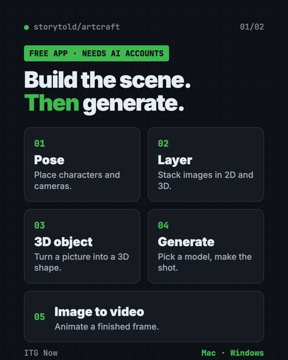
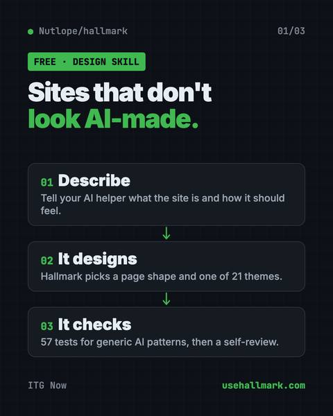
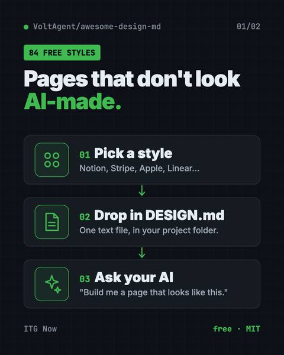

Free AI tools for Design

ArtCraft: Free AI Video and Image Studio
Build your scene in 2D or 3D first, then let an AI model make the image or video.

PhotoCraft: Free PSD Editor That Works Like Photoshop
It opens and saves real layered PSD files and runs offline on Mac, Windows and Linux.

OpenPencil: Free Figma Alternative With AI
It opens and saves .fig files, builds designs from a chat prompt, and lets you co-edit live with no account.

Compositor: Free Photoshop Alternative for Mac
Compositor is a free Photoshop alternative for Mac with layers, masks, blend modes and Photoshop-style shortcuts.

On-Brand Diagrams with Claude: Diagram Design Guide
Ask in plain words and get a clean diagram in one file you can open anywhere.

Hallmark: Free AI Web Design Skill for Claude Code
It steers your AI away from generic pages so each site looks like its own brand.

OpenDesign: Free Open Source AI Design Tool for Teams
It uses Claude Code, Codex or Cursor to make on-brand prototypes, slide decks, dashboards and images.

Awesome DESIGN.md: Free AI Design System Files
Drop one in your project and Claude Code or Cursor builds pages in that site's style.
Other fields
- 102 articlesAI for Developers
- 94 articlesAI for Everyone
- 45 articlesAI for Business
- 19 articlesAI for Creators
- 18 articlesAI for Marketing
- 14 articlesAI for Finance
- 13 articlesAI for Students
- 12 articlesAI for Government & Law
- 10 articlesAI for Jobs & Careers
- 9 articlesAI for Media
- 8 articlesAI for Education
- 4 articlesAI for Healthcare